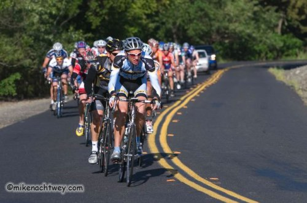
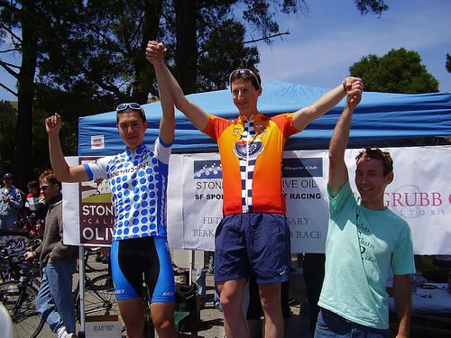

Note: Since this is my first race report of the season, I've added a lot of background information for my friends who aren't cyclists. The rest of you may want to skim down to the bottom.
Amateur cycling in the U.S. is organized into five categories, Cat 5 (the slowest) through Cat 1 (the fastest). To upgrade up from Cat 5, you only have to finish 10 races. To upgrade up from any other category, however, you have to place well. For example, in a Cat 3 race, only the first six finishers score points--10, 7, 5, 3, 2, and 1 point, respectively--and to upgrade to Cat 2, you have to score 25 points in any one calendar year.
My goal for last season was to upgrade to Cat 3, which I did with one 1st, two 2nds, and a 3rd place finish. My goal for this season is to upgrade to Cat 2.
Although I've been riding continuously since the end of cyclocross season, my training started in earnest in January. It's hard to maintain peak form for longer than a month--eventually your body just needs a rest--so it's important to come into form at the right time. There are a set of long, hilly stage races in June and early July that I'd like to do well in, so most of this winter consisted of long, slow rides to build up endurance. A typical week involved around 18 hours of riding with only 2-3 hours of that being intensity work. The most difficult part is not coming down with a cold, given the season.
Starting in April, the mileage tapered off a bit, and the intensity started ramping up. I also started racing. I planned to do three races while coming into form: Sea Otter, Wente Vineyards, and Berkeley Hills. All three are long and hilly, and all have long, uphill finishes. Since I'm mostly slow-twitch muscle and consequently can't sprint worth a damn, such races are my best shot at placing well. My plan was to use Sea Otter and Wente as training races and start coming into form around Berkeley Hills.
At Sea Otter it rained terribly. I also failed to drink enough and started cramping with an hour to go. Still, I managed to hold on until the final hill, placing 20th out of 78.
At Wente the weather was perfect, and a group of 13 of us dropped the rest at the bottom of the final hill. While I was strong enough to stay with this group, however, I didn't quite have the legs for the final kick, and I came in 12th out of 93.
In the three weeks since Wente, that missing kick has been the focus of my training. I've done several workouts of 90-second, all-out intervals, and I raced the Cat's Hill Crit, which consisted of twenty or so laps around a course with a short, but amazingly steep, hill. My form has started to feel really good, and I've come into this weekend feeling like this may be the race--my first time to score points as a Cat 3.
Since this is my first road season in California in several years, I don't really know many of the other racers yet, and I've been reluctant to join a California team. Instead, I'm still wearing my Essex County Velo kit from last season. Having no teammates in a race affects my race strategy in important ways.
Competitive cycling is all about the wind. Ride hard at the front of the pack all race long, and everyone else will sit in your draft, only coming around you at the last second to steal the victory you worked so hard to set up. If you want to win a race, you have to be crafty, working only when you can do so without helping another team. For example, you could sit in the middle of the pack all race long, comfortably sheltered from the wind, only to emerge on the final hill, where the steep incline makes strength-to-weight ratio, not aerodynamics, the determining factor. This was my strategy at both Sea Otter and Wente Vineyards. It's effective, but somewhat boring.
Another, more glorious way to win is through what is called a breakaway, in which a small group of riders attacks the main group, sprinting quickly off the front of the pack and catching the others by surprise just long enough to establish a small gap between the two groups. Once such a gap has formed, the dynamics of the race change substantially.
Assume, for example, that there are five riders in the break. So long as they are not reabsorbed by the main pack before the finish, the worst that any of them will place is fifth. They thus have strong motivation to work together, even if they're from different teams, and will usually take turns blocking the wind for each other. The rider blocking the wind is said to take a pull; a group of riders that take turns pulling is said to rotate.
Conversely, those in the main pack, also called the peleton, now face a bit of a prisoner's dilemma: it is to all of their benefits that someone in the peleton take a pull and bridge the gap between them and the breakaway, but doing so will sap that rider's energy, leaving him spent before the finish. Those in the main pack who do not take a pull, however, will remain rested, leaving them in better shape for the finish than those who do. Acting as a group of individuals, then, the peleton is unlikely to close the gap between themselves and the breakaway.
Bringing the breakaway back takes teamwork. Teams with riders in the break are said to have representation in the break. As discussed above, working to pull the break back doesn't make sense for individuals, but the situation is different for teams not represented in the break. For example, the weaker riders on a team can work together to bring back a break while their stronger riders rest in the middle of the peleton, out of the wind. A strong rider with a strong team is thus in a much better strategic position than one without a team; should he fail to make it into an important breakaway, he can always ask his teammates to pull it back.
One advantage of racing without a team is that no other rider expects me to pull back any breaks for their benefit. The disadvantage, however, is that I can't count on anyone else to help pull back a dangerous breakaway on my behalf. My strategy is thus to mark the strongest riders on the largest teams. If they go in a breakaway, I work like hell to go with them. If they miss a break, I let it go, hoping their teams will pull it back before the finish. It's risky, but working through all the strategic possibilities (and frequently stressing about them) gives my mind something to do over a three-hour bike race.
The course of the Berkeley Hills Road Race is a 19-mile loop around the San Pablo Dam Reservoir, which sits between the towns of Orinda and El Sobrante. Most of the course consists of gently rolling hills, but the crux falls in a section of large, steep hills known locally as The Three Bears. The first of these, Momma Bear, is about four minutes long at race pace. After Momma Bear there are two smaller rises, either one of which may be Baby Bear (there doesn't seem to be any consensus which one it is). Then there's a long, fast, straight descent before Papa Bear, which is also around four minutes long. The race starts about halfway around the loop and continues for three and a half laps to finish at the top of Papa Bear.
Halfway up Papa Bear is a feed zone, a spot where the grade keeps the pace slow enough that spectators can safely hand racers additional water or food. As she did at Wente Vineyards, Lucy has graciously agreed to spend her day there, handing me a bottle on each lap so that I only have to carry a single one with me at a time around the hilly course.
The start of the race is calm. It's a warm day, and we have 71 miles of racing ahead of us, so no one is in a hurry. The first time up Papa Bear, however, a small break pulls away. It's early, and I don't think it will stay off the whole race, so I watch them go. Everyone else seems to be of the same opinion, and the break is quickly out of sight. By the next time up Papa Bear, however, the larger teams without representation in the break are getting nervous. They pick up the pace, and the break is pulled in about fifteen minutes later.
Around this time, a friend of mine from the Alto Velo team rides up and asks me what I think about making a break for it. I reply that I think it's too early; the pack just pulled in a break, and I don't feel like they're ready to let another one go right now. Plus we'd be off for almost half the race before the finish--a long haul. I tell him I think the best chance for a break is just before Momma Bear on the last lap.
Others in the pack have a different opinion, though, and the attacks start while we talk. Max Haines-Stiles of the Metromint team goes first, putting a small gap on the field along with several others, but he's quickly pulled in. In a nice display of teamwork, Rob Dahl of Metromint immediately counter-attacks, trying to capitalize on the lull in the pack's energy from pulling in Max. For a long time he's by himself, but eventually he's joined by a few others. Unfortunately for Rob, that motivates the pack, and they're pulled in shortly thereafter. Undeterred, Max attacks again, taking two others with him. This time, the peleton is truly tired, and the three slip away on the winding roads leading up to Momma Bear.
At the top of Momma Bear, my friend Shane Litzenberger rides off the front of the pack, yelling at me to come with him. Including him, there are now four riders off the front. Two large teams, Alto Velo and Oakland, have no one in the break. I'm sure he'll be pulled back, so I decline.
As we climb Papa Bear for the second to last time, however, our pace is almost lethargic, and I'm starting to wonder if the larger teams remember that there are people off the front. By the top, I've started voicing my concerns, asking everyone why they're letting the break go. Amazingly, both Alto Velo and Oakland are convinced there's no one off the front. I argue and argue, but they're having none of it.
At this point, I'm in trouble. I know that without some serious teamwork from the peleton, first through fourth place are all wrapped up at this point. I have no team to work for me, and I can't seem to convince the others that there's anyone off the front. Moreover, Nick Agate of Tam Cycling is still in the peleton. He won Wente Vineyards, so I'm pretty sure he can beat me up Papa Bear. That puts me in sixth, at best. As the points only go six deep, I decide it's time for a bold move. Luckily, others are thinking the same thing.
Once again, the attacks start on the winding, rolling section of the course before Momma Bear. A few are quickly pulled in, but the pack seems tired, so when a rider from Team Spine attacks, I jump with him. After twenty or thirty seconds of hard pedaling, I look back, and the riders in the front of the pack have sat up--they're not chasing. "They're letting us go!" I scream, and pull through hard to put more time on them. Two pulls later we seem doomed; a quick glance behind me shows the pack charging hard.
Somehow, we stay off until a few seconds later when Matthew Barrowclough of the Kovarus/SquadraOvest team takes advantage of the reduced size of our gap, attacking out of the pack and quickly riding up to and right past us. I barely catch his wheel as he goes by, but the resulting acceleration helps lengthen our gap to the peleton. The Team Spine rider is looking spent, so Matthew and I take turns pulling for a while, as the size of our gap over the main pack rises and falls. For several minutes I'm not sure we're going to stay off. Then, suddenly, they give up, presumably thinking that we'll use up all our energy staying off the front only to crack on Momma or Papa Bear.
I resolve to prove them wrong.
"This is it!" I yell at my breakaway companions. "We've already gone too hard to have anything left for the finish. Either we stay off, or we're going to get spit out the back of the pack when we hit Papa Bear!" They seem motivated, and we work a smooth rotation all the way to the bottom of Momma Bear.
It has been really windy all day between Momma Bear and Papa Bear, and I'm pretty sure the peleton will go slowly through that stretch: the teams seem pretty disorganized (even with two breaks, now, off the front), and no individual will want to ride hard in the wind right before the final assault on Papa Bear. If the three of us work together through the wind, I reason, we might just stay off until the finish. I explain this to my companions as we take pulls, and we agree to work together and not attack each other before Papa Bear.
At the top of Momma Bear, however, I am horrified to look behind me and see Matthew thirty yards back and the Team Spine rider nowhere in sight! I gesture wildly to Matthew to catch up, but he gives me a look that says he can't, so I turn, drop into an aero position, and in desperation prepare to solo it all the way to the finish. Luckily, seeing my resolve re-motivates Matthew, and he puts in a mighty effort to catch back on by the top of the first of the two Baby Bears.
Once he recovers, we begin trading pulls again, constantly looking over our shoulders to see if the pack is closing. Unfortunately, the course is littered with competitors from other categories at this point, and it's impossible to tell in a quick, oxygen-deprived glance whether any one group in the distance are those chasing us. The resulting paranoia fuels our fires.
Thinking strategically, the goal in a break is to work hard enough not to get caught by the peleton, but less hard than anyone else in the break, in order to beat them in the finish. In my frantic state, I can think of no such thing. At first, I am so worried we'll get caught that I don't care if Matthew beats me in the finish. After twenty minutes of suffering together, I'm ready to hold hands as we cross the line. I pull up alongside him at the bottom of Papa Bear. "Let's finish this thing," I say. "We've earned it!"
I know there are around four minutes left in the race, and pace is everything. I stare at the cycle computer on my handlebars, determined not to let my power output drop below 400 watts. Less than a minute into the climb, however, Matthew starts to drop back. There is a headwind, and I'm not sure if he's dropping back because he's too tired to hold the pace, or if he's planning to sit in my draft and come around me at the finish. Unwilling to find out, I attack hard before he gets fully behind me and quickly put twenty meters between us.
The next three minutes are utter agony, broken into small, fifteen-second pieces. Pedal! Pedal! Pedal! Look back! I still have twenty meters on him. Pedal! Pedal! Pedal! Look back! And so on. My legs are burning. I'm having trouble steering the bike in a straight line. I pass several friends from Cal Cycling in the feed zone. "Go Sean!" they yell. I can see the finish line. The camera, the officials, their tent--all are burned into my vision as I try to concentrate on suffering. Don't let the pain go down! Keep hammering! I stand, I sit, I thrash the bike about. Efficiency has left the room; only desire remains.
With thirty meters to go, I take one last look back at Matthew, and it's clear I have it. I sit up. A smile crosses my face. I can hear Lucy cheering at the finish line. I try to act calm as I ride across it, a fist in the air. I last about five more meters, then fall to the ground. Lucy runs up and gives me a hug. I'm flat on my back, helmet resting on the pavement. Someone grabs my arm. I open my eyes, and it's Matthew, his face rendered almost invisible by the sun behind his head. He pulls me to my feet, and I hug him, too, half out of happiness and half so that I don't fall down.
Afterwards, confusion reigns. Matthew is convinced we've just gone one-two. I'm convinced there were still four others off the front, and that we went five-six. The officials are freaking out trying to pick the other riders still coming in and want nothing to do with us or our questions. So we wait. Lucy goes to grab me food and water from the car. I find Shane, confirming that he was still off the front when we finished.
Eventually, it is all sorted out. One of the three riders in the first break had indeed been dropped and reabsorbed by the peleton. Max and the other one stayed off, and Shane stayed off by himself, leaving me in fourth. I am in the points for the first time as a Cat 3. My upgrade to Cat 2 is officially underway.
| The race photographers didn't get any good pictures of me, but here are a few of my friends in the race: |
|  |
| Matthew leading the pack early on. You can just barely see my blue and white jersey and black arm warmers at the back right. |
|  |
| Max (left) and Shane (right) on the podium. |